MiniMax-H3 Video With Audio¶
MLX-Gen runs MiniMax-H3 natively on Apple Silicon: one text prompt produces a 24 fps video clip and a synchronized stereo soundtrack, saved as a single MP4 with an AAC audio track. The lightx2v Turbo adapters run the same model in 8 transformer evaluations instead of 50, which is the practical way to use it locally. Use this page for setup, prompting, sizing, runtime cost, and current limits; use API and CLI for the option table.
What You Get¶
- Text-to-video with audio (
text-to-videopublic task): 5 to 15 seconds at 24 fps, stereo audio at 32 kHz, any aspect ratio between 1:4 and 4:1 on a 32-pixel grid. - Image-to-video with audio (
image-to-videopublic task,--image-path): the clip starts from your keyframe. The canvas follows the keyframe's aspect ratio at the entry's short edge unless you pass--width/--height, the keyframe is stretched onto that canvas, and it conditions both the latent rows and the text sequence (through the Qwen3-VL vision tower), exactly as the reference pipeline does. - One soundtrack covering three kinds of sound: ambient and diegetic sound, a score, and spoken dialogue with the speaker's mouth animated to match. See Prompting.
- Three catalog entries that share the same weights and differ only in speed defaults:
| Alias | What it runs | Default canvas | Default steps | Flow shifts (video / audio) |
|---|---|---|---|---|
minimax-h3 |
Base model, no adapter | 1344x768 |
50 |
12 / 3 |
minimax-h3-turbo |
lightx2v 8-step Turbo adapter trained at 768p | 1344x768 |
8 |
6 / 3 |
minimax-h3-turbo-544p |
lightx2v 8-step Turbo adapter trained at 544p, mixed aspect ratios | 960x544 |
8 |
12 / 3 |
The --steps value counts transformer evaluations; the schedulers use one more grid point
internally. All three entries resolve to the MiniMaxAI/MiniMax-H3 repository and the Turbo
entries add their adapter automatically.
Requirements¶
MiniMax-H3 is large: a 27B-parameter transformer, a 32B-parameter Qwen3-VL conditioner (of which MLX-Gen loads the 50 layers the model conditions on), a 2.4B-parameter video VAE and an audio VAE.
| Resource | Requirement |
|---|---|
| Disk | About 140 GB for the model snapshot (transformer/, text_encoder/, vae/, audio_vae/, tokenizer and configs) plus 1.4 GB per Turbo adapter. |
| Memory | --quantize 8 is required on a 128 GB Mac, not an optional saving: unquantized the weights are 125 GiB resident, which is 97% of the machine before a single activation. The runtime refuses such a load with an explanatory error rather than letting the OS kill it. At q8 the measured 960x544, 124-frame Turbo run peaks at 80.5 GiB of MLX memory inside an 88.2 GiB process footprint on an Apple M5 Max, and 1344x768 at 84.8 GiB inside 92.9 GiB. The MLX free-buffer cache is capped at the process default of up to 8 GiB; --mlx-cache-limit-gb changes it. |
| Download | mlxgen download --model minimax-h3-turbo-544p fetches the snapshot subset MLX-Gen needs and the matching Turbo adapter. Generation never downloads. |
--quantize 8 quantizes the transformer and conditioner at load time, one shard at a time, so
the load never holds a full BF16 copy next to the q8 copy. The first load reads 133 GB of shards
from disk (about 4.5 minutes on the reference machine); repeated loads from the OS page cache
take about 16 seconds.
Prepared Package¶
mlxgen prepare writes the quantized model once so later runs skip the 133 GB read and the
quantization pass:
mlxgen prepare --model minimax-h3 --quantize 8 --path models/minimax-h3-8bit
The package is 75 GB (44 GB transformer, 26 GB conditioner including the vision tower, 5.5 GB for
the two VAEs, plus tokenizer and configs). It stores the mixed policy MLX-Gen uses for this model:
the attention and feed-forward linears of the transformer and the conditioner at q8, the fp32 heads,
timestep MLP and AdaLN modulation projections at their source precision. Prepare from the base entry
so the package carries no adapter, then pick the schedule with --base-model:
mlxgen generate --model models/minimax-h3-8bit --base-model minimax-h3-turbo-544p \
--prompt "..." --seed 42 --output fox.mp4
--base-model minimax-h3-turbo-544p (or minimax-h3-turbo) applies that entry's defaults and
attaches its Turbo adapter on top of the stored weights; omit it for the base 50-step schedule. Do
not pass --quantize when loading a prepared package. The package loads shard by shard like the
Hugging Face snapshot, so its load-time memory is the 75 GB of stored weights, not a second copy, and
a page-cached package loads in seconds. The stored weights are the load-time quantization: the fox
clip below generated from the package with the same seed is byte-identical to the --quantize 8 clip
from the snapshot (all 124 frames and the soundtrack), at the same 80 GB MLX peak and an 88 GB
process footprint.
Quick Start¶
mlxgen download --model minimax-h3-turbo-544p
mlxgen generate \
--model minimax-h3-turbo-544p \
--prompt "[Shot 1] Cinematic medium shot, static camera, shallow depth of field. A red fox trots through fresh powder snow in a quiet birch forest at dawn; its breath steams in the cold blue light. Halfway through the clip it stops, ears twitching toward the camera, then bounds forward, kicking up a spray of snow that catches the low sun." \
--soundscape "Soft rhythmic crunch of paws in dry snow, a faint steady wind through bare branches, and two distant crow caws near the end." \
--music "Sparse, gentle piano notes with long reverb, slow tempo, contemplative and cold." \
--seed 42 \
--quantize 8 \
--output fox.mp4 \
--metadata
The command writes fox.mp4 (124 frames, 960x544, 24 fps, stereo AAC) and fox.metadata.json.
Switch to --model minimax-h3-turbo for the 768p adapter and canvas, or to --model minimax-h3
with --steps 50 for the base schedule.
To start from an image, add --image-path and describe what happens next; the first frame reproduces
the picture and the motion follows the prompt:
mlxgen generate \
--model minimax-h3-turbo-544p \
--image-path keyframe.png \
--prompt "Starting from the pictured red fox in the snow, the fox turns its head toward the camera, then trots forward through the powder." \
--soundscape "Soft crunch of paws in dry snow, faint wind." \
--music "Sparse piano, slow tempo." \
--seed 42 --quantize 8 --output fox_i2v.mp4 --metadata
Prompting¶
MiniMax-H3 is trained on a structured prompt with three labelled sections separated by blank lines:
integrated_multimodal_description: <what happens on screen, shot by shot>
overall_soundscape: <diegetic sound: what the scene itself sounds like>
non_diegetic_music: <score, or "No non-diegetic music; natural sound only.">
--prompt fills the first section, --soundscape the second, and --music the third. A prompt
that already contains the section labels (for example one written with MiniMax's
prompting guides) is passed through
verbatim, so --prompt-file works for complete structured prompts. The prompt is tokenized as-is,
without a chat template or special tokens; it may be long, and detailed shot descriptions help.
Describe motion with timing ("halfway through the clip"), name the sounds you expect on impact events, and state when a shot has no score. The model is guidance-distilled: there is no negative prompt and no guidance scale.
The three kinds of sound each have a place in the prompt:
- Ambient and diegetic sound goes in
overall_soundscape(--soundscape): room tone, weather, footsteps, engines, birds, impacts. - Music goes in
non_diegetic_music(--music), or write "No non-diegetic music; natural sound only." for silence; music that plays inside the scene (a busker, a radio) belongs in the soundscape. - Speech is written into the description with a speaker id and a dialogue tag:
The woman with a warm mid-pitched voice (S1) says: <d>[English] Good morning!</d>. Give each speaker a stable(S1),(S2)id and enough identity for a voice (age, gender, pitch, pace); keep only the language tag and the exact words inside<d>. For narration use the phrasesays in an off-screen voiceoverand add that the on-screen lips stay closed. MiniMax lists 11 stably supported dialogue languages (Arabic, Chinese, English, French, German, Italian, Japanese, Korean, Portuguese, Russian, Spanish).<d>,</d>,<|cutoff|>and the lyric and caption markers are dedicated tokens of the model's vocabulary; MLX-Gen tokenizes them exactly as the reference does.
Image-To-Video¶
--image-path selects MiniMax-H3's first-frame mode. The keyframe defines the canvas: its aspect
ratio is mapped onto the entry's geometry (768-pixel short edge for minimax-h3 and
minimax-h3-turbo, 544 for minimax-h3-turbo-544p, capped at the entry's pixel budget) on the
32-pixel grid, and the image is stretched onto that canvas. Pass --width/--height to force a
different canvas; the keyframe is stretched to it. A 16:9 keyframe gives 960x544 on the 544p
entry, a square one 544x544.
The keyframe reaches the model twice: as noise-augmented condition latents pinned at the start of
the clip, and as a <Picture 1> vision block in the text sequence, so the prompt should describe
the motion that follows ("the fox turns, then trots forward") rather than re-describe the picture.
The soundtrack is generated as in text-to-video. Metadata records task: image-to-video, the
source image path and size, and the resolved canvas. A second, closing keyframe (the reference's
last_image) is not exposed yet.
Motion prompts for still keyframes work best when they describe one continuous action and its end
state: "lifts straight up in one smooth, continuous motion, never touching the ground again, and
leaves through the top of the frame" produced a complete takeoff, while "lifts off slowly, hovers for
a moment, then climbs" on the same seed produced a late, partial ascent. Name the parts of the subject
that must stay as they are ("the same fixed landing legs, no wheels"), give the soundscape a
continuous character ("a deep, steady engine roar that builds and then fades") and exclude what you
do not want ("no crackling, no buzzing"). The 544p adapter was trained on 960x544-class canvases: a
16:9 keyframe lands on its native canvas, while a square keyframe gives 544x544 and still works,
as the takeoff sheet below shows; a portrait keyframe gives a portrait canvas. First-person prompts
work too: the room walkthrough below walks, sits, opens a laptop and turns to a window from one
painted keyframe. Describe object manipulation as one motion about a fixed pivot ("lifts its lid in
one slow, continuous rotation about the hinge at the back") and keep the object anchored ("which stays
in place on the table"); fast hand-object interaction is where the 8-step adapter is least reliable.
See the starship, takeoff and room entries under Contact Sheets for the complete
prompts.
Sizing And Duration¶
- Frames follow the video VAE's
17n + 5rule, and--framesrounds up to the next valid count, warning when it does. There are fourteen accepted counts,124(5.17 s) through345(14.375 s):124, 141, 158, 175, 192, 209, 226, 243, 260, 277, 294, 311, 328, 345. The duration ceiling applies to the rounded count, so346and above are rejected rather than rounded to362. The metadata records bothframesand therequested_framesyou asked for. - Width and height must be multiples of 32. The default 16:9 canvas is
1344x768; the 544p adapter defaults to960x544. Portrait and square canvases follow the same 768-pixel short edge (768x1344,768x768) when you omit the size. - Audio length follows the video: 40 audio latents per second, trimmed to the clip duration.
Measured Runtime¶
Apple M5 Max, 128 GB, --quantize 8, 124 frames, MLX 0.31:
| Route | Canvas | Steps | generate_video wall time (denoise + both decodes) |
Peak MLX memory |
|---|---|---|---|---|
minimax-h3-turbo-544p |
960x544 |
8 | 11 to 17 min per clip (650 to 1011 s over eight clips; a fresh process is fastest, later clips in one process run slower as the machine warms up) | 80 GB |
minimax-h3 (base) |
960x544 |
50 | 62 min (3741 s) | 79 GB |
minimax-h3-turbo |
1344x768 |
8 | 34 min (2035 s; about 4.2 min per transformer evaluation) | 85 GB |
Loading is separate: the first load after a download reads 133 GB of shards (about 4.5 min), and a warm page cache brings that down to about 16 s. The 768p step is dominated by attention over a 37,800-row packed sequence; the 544p canvas is the practical iteration setting on Apple Silicon today, and the 768p canvas is the quality setting for a final render.
For scale, the same fox description through Wan2.2 TI2V-5B (q8, 832x480, 121 frames at 24 fps,
50 steps, silent) took 23 min on the same machine at a 25 GB MLX peak; its sheet is included below.
Output Contract¶
- The MP4 carries the video stream plus one stereo AAC track (32 kHz, 192 kb/s). Pass
--no-audioto skip the audio decode and write a silent clip. - If the audio cannot be muxed (no
ffmpegonPATHand the PyAV fallback fails), the video is still written and the track is saved next to it as<output>.wav; the metadata records why. - Metadata records
steps(transformer evaluations, as passed to--steps),video_shift,audio_shift,num_inference_steps(the scheduler grid, one more thansteps),text_tokens,duration_seconds,framesandrequested_frames, and theaudio_*fields (audio_present,audio_source: "generated",audio_channels,audio_sample_rate,audio_duration_seconds,audio_muxed,audio_codec,audio_mux_mode).
Driving MiniMax-H3 From An Application¶
mlxgen capabilities --model minimax-h3-turbo-544p returns everything an application needs to build
controls for this model without hardcoding its name. Both rows, minimax-h3.text-video and
minimax-h3.first-frame, publish:
| Field | Value on the 544p entry |
|---|---|
generates_audio, audio_channels, audio_sample_rate |
true, 2, 32000 — this route composes a soundtrack with the picture, which is different from a restoration row's supports_audio_passthrough |
prompt_sections |
One descriptor per structured section, carrying its key, the engine's literal label, the option and parameter that fill it, its role and whether it is required |
min_frames, max_frames, frame_multiple, frame_remainder, frame_rounding |
124, 345, 17, 5, "up" |
output_fps |
24.0 — supports_fps: false only says you may not choose a rate |
default_steps, default_width, default_height, default_frames |
8, 960, 544, 124 |
default_flow_shift, default_audio_shift |
12.0, 3.0 |
supports_flow_shift, supports_audio_shift, supports_text_encoder_release |
true |
flow_shift_option, flow_shift_parameter |
"--video-shift", "video_shift" — the same control Wan spells --flow-shift, so read the spelling off the row rather than keeping a per-family table |
weight_precision, unquantized_weights_bytes, recommended_quantize, validated_quantization_bits |
"bf16", 134200000000, 8, [8] |
measured_runs |
Three measured runs with their outcomes and conditions, including one the OS killed |
max_validated_frames, peak_bytes_fixed, peak_bytes_per_packed_row |
124, and the measured line through those runs |
supports_guidance, supports_negative_prompt |
false, false — published separately because they are independent properties |
Each catalog entry publishes its own label and defaults, so minimax-h3-turbo (1344x768) and
minimax-h3-turbo-544p (960x544) are distinguishable in a model list. The fields arrived in
capability schema_version 13 and are additive, so an application can gate on
schema_version >= 13.
Use prompt_sections[].label to detect a section a prompt already carries: pairing such a prompt
with the option that fills the same section is refused, since it would send the model two of that
section.
How much memory a length needs¶
Peak memory follows the packed sequence length, which is a deterministic function of canvas and frame
count. It is not two separate axes: a 243-frame 960x544 request and a 124-frame 1344x768 request
differ by 0.5% in packed rows and were measured at the same MLX peak. Expected footprint is roughly what is already
resident, plus the MLX cache as it fills, plus peak_bytes_per_packed_row x rows.
That is an estimate of bytes, not a promise that a run fits. The 243-frame request above was killed
by the OS at a footprint of at least 92.7 GiB, four denoise steps in, on a 128 GiB machine at
recommended settings, because another application held 7.5 GiB. The same request on an otherwise idle
machine has room. max_frames is the decode grid, which holds anywhere; max_validated_frames says
how far the measurements go. Before a long run the runtime estimates the peak, refuses what cannot fit
at all, and warns when a request is close enough that other resident processes decide the outcome.
The largest lever is the cache limit, not the canvas: the same configuration measured under a raised
--mlx-cache-limit-gb came out 16.8 GB higher, over three times the difference between 960x544 and
1344x768. Low-RAM mode tightens that cache, and an explicit --mlx-cache-limit-gb overrides the
tightening; the runtime says so on stderr when it happens.
Sizes are bytes rather than GB so that no consumer has to guess which unit is meant; the weight
figure is 134.2 GB, which is 125 GiB, and on a 128 GiB machine that difference decides whether a run
starts. Compare unquantized_weights_bytes against your own memory to decide whether you can skip
quantization: a larger machine runs this model unquantized. measured_peak carries the conditions it
was measured under because the peak scales with the canvas and the frame count; a longer clip on the
same entry costs more than the published figure.
supports_text_encoder_release lowers the peak during denoising, not during loading. The conditioner
loads first and stays resident while the transformer loads, so it cannot reduce the load-time peak,
which is the larger of the two on this model.
Python¶
from mflux.models.common.config import ModelConfig
from mflux.models.minimax_h3.variants import MiniMaxH3
model = MiniMaxH3(model_config=ModelConfig.minimax_h3_turbo_544p(), quantize=8)
video = model.generate_video(
seed=42,
prompt="A red fox trots through fresh snow in a birch forest at dawn.",
soundscape="Soft crunch of paws in dry snow, faint wind, two distant crow caws.",
music="Sparse piano, slow tempo.",
)
video.save("fox.mp4", export_json_metadata=True)
waveform, rate = video.audio.waveform, video.audio.sample_rate # (2, samples) float32, 32000
generate_video also accepts image_path (first-frame image-to-video), width, height,
num_frames, num_inference_steps, video_shift, audio_shift, generate_audio,
release_text_encoder, and progress_callback. Progress phases are start, denoise once per
transformer evaluation, decode, and generated; the CLI adds save and a final complete once
the file is written and the soundtrack muxed. Every event also reaches the model's registry, so
model.callbacks.subscribe_progress(...) sees the whole run. The unified runtime resolves
--model minimax-h3* to this class through load_generation_model(...). A prepared package loads with
MiniMaxH3(model_config=ModelConfig.from_name("models/minimax-h3-8bit", base_model="minimax-h3-turbo-544p"), model_path="models/minimax-h3-8bit")
and no quantize argument.
Adapters¶
The Turbo entries load their lightx2v adapter from lightx2v/Minimax-h3-Turbo with the effective
scale the adapter was trained with (alpha 8 at rank 128). Pass your own --lora-paths to replace
the automatic adapter: the list you pass is the complete list, so a style or character adapter on a
Turbo entry goes together with the Turbo file (the adapters stack on the same layers). The 4-step
768p Turbo adapter (minimax_h3_fl2v_turbo_4step_v1.2_768p_bf16.safetensors) works with
--steps 4 --video-shift 6.
Steps per adapter, from the lightx2v model specifications: the 544p 8-step adapter (the
minimax-h3-turbo-544p entry) is distilled at 8 evaluations and recommended at 8 or 4; the 768p
8-step adapter (minimax-h3-turbo) at 8 only; the dedicated 4-step adapters (v0.1 at 544p, v1.0 to
v1.2 at 768p) at 4. Eight evaluations is the setting every included clip uses and the one the
lightx2v Studio runs; four halves the denoise time and is the draft setting, which community
reports describe as softer on detail and weaker on fast motion. MLX-Gen steps the video and audio
streams on their own shifts, as the reference does, so the soundtrack keeps its schedule at any
step count. Measured on the same seed and prompt at 640x352 (the
step-count sheet below): the 544p 8-step adapter at 4 steps keeps the staging of
its 8-step clip and finishes in a third of the time, the 4-step v1.2 adapter at 4 steps renders a
brighter, more saturated take of the same scene, and running that adapter at 8 steps changes little.
The dedicated 4-step adapter needs --video-shift 6; the 8-step adapter keeps the entry's 12:
mlxgen generate --model minimax-h3-turbo-544p --steps 4 --prompt "..." --seed 42 --output draft.mp4
mlxgen generate --model minimax-h3-turbo-544p --steps 4 --video-shift 6 \
--lora-paths "hf:lightx2v/Minimax-h3-Turbo/minimax_h3_fl2v_turbo_4step_v1.2_768p_bf16.safetensors" \
--prompt "..." --seed 42 --output draft.mp4
mlxgen generate --model models/minimax-h3-8bit --base-model minimax-h3-turbo-544p \
--prompt "Skeletor stands in a torch-lit stone throne room and raises his staff." \
--lora-paths "hf:lightx2v/Minimax-h3-Turbo/minimax_h3_fl2v_turbo_8step_v1.0_bf16.safetensors" \
loras/H3_Skeletor_1.4.safetensors \
--lora-scales 1.0 1.0 --seed 42 --output skeletor.mp4
Two key layouts load. PEFT adapters over the diffusers module names (transformer_blocks.N.attn.to_q,
ff.net.0.proj, ff.net.2, the token refiner) are what lightx2v publishes. Community adapters
(civitai, ai-toolkit, the reference generate.py, ComfyUI, kohya and musubi-tuner) are trained
against the original checkpoint's names (blocks.N.attn.qkv_proj, attn.out_proj, mlp.fc1,
mlp.fc2, token_refiner.blocks.N, the final_layer and patch projections), with or without a
diffusion_model. prefix, in PEFT (lora_A/lora_B) or kohya (lora_down/lora_up plus
.alpha) naming, and in musubi-tuner's flattened lora_unet_ form. The runtime maps them onto
our modules the way the diffusers converter does: the fused QKV shares one lora_A and splits
lora_B into to_q/to_k/to_v row thirds, and fc1's [gate; value] halves swap to our
SwiGLU's [value; gate]. Scale follows the file: PEFT metadata alpha gives alpha / rank,
kohya .alpha tensors are folded per module, and a PEFT file with neither (how ai-toolkit exports)
runs at alpha == rank, the same as ComfyUI and diffusers. The one layout refused is
DiffSynth-Studio's (.lora_A.default. over attn.qkv_proj), whose fused QKV rows keep the raw
checkpoint's per-head interleaving; loading it silently would apply the rows in the wrong order.
Every metadata export lists the adapter files, their scales and the matched / unmatched key
counts (lora_application_reports).
Current Limits¶
- Reference-to-video (Ref2VA) and the closing keyframe (
last_image) are not available yet. Text-to-video and first-frame image-to-video are. - No published MLX-Gen package yet:
--quantize 8quantizes at load time, ormlxgen preparewrites a local 75 GB package (see Prepared Package). - The 768p canvas is slow on Apple Silicon (about 5 minutes per step); use the 544p adapter to iterate.
- MiniMax-H3 is released under the MiniMax H3 Community License, which restricts use in some territories. Read the license on the model card before you download or distribute weights or outputs.
Verification¶
Every component is a direct port of the diffusers 0.40 reference implementation and was checked
against it with real weights: the packed layout and per-row timestep plan are bit-exact, the
rectified-flow schedules match torch.linspace bit-for-bit on 600 grids, the transformer
(one real block), the Qwen3-VL conditioner (text and image-conditioned: vision tower, image
processor, 3-axis rope index and DeepStack injection), the video VAE encoder/decoder and the audio
VAE encoder/decoder all match at fp32 rounding noise, and the q8 transformer block stays within
1.3e-2 relative RMS of the fp32 reference. The included contact sheets below are the model-backed
proof for the shipped routes.
Contact Sheets¶
Each sheet shows eight evenly spaced frames of one clip with the generated track's waveform and
spectrogram on the right; the MP4 next to each sheet in docs/assets/minimax-h3/ is the playable
proof, and the prompt_*.txt files hold the complete structured prompts. Unless a row says
otherwise: minimax-h3-turbo-544p, 960x544, 124 frames, 8 steps, --quantize 8, seed 42, Apple
M5 Max.
Fox, seed 42 (clip, prompt): the backlit fox walks straight toward the camera down a snowy forest path, stops and faces it halfway through as the prompt asks, then bounds forward kicking up snow; the very quiet track (about -49 dBFS RMS, peaks at -31 dBFS) carries the paw crunches and the sparse piano notes under a faint wind.
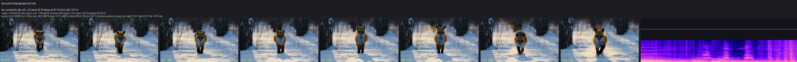
Fox, seed 43 (clip): a different fox and framing from the same prompt, walking out of the birch shadows into the low sun and breaking into a run at the end; a quiet track (-43 dBFS RMS) with the paw crunches and piano notes spaced along it.
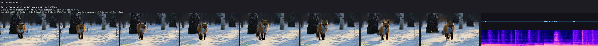
Turbo versus base, seed 42 (base clip): the same prompt and seed through the 8-step 544p adapter (top, 17 min in a long-running process) and the 50-step base schedule at the same canvas (bottom, 62 min). Both stage the prompt: the fox approaches down the forest path, pauses facing the camera, then bounds forward through the powder. The base schedule keeps the fox smaller and deeper in the birch shadows with steadier motion and a similarly quiet track (-44 dBFS RMS); the adapter frames it closer and brighter. The base entry remains the reference schedule for the 768p canvas it was released with; for 544p iteration the adapter is the faster choice at comparable fidelity.
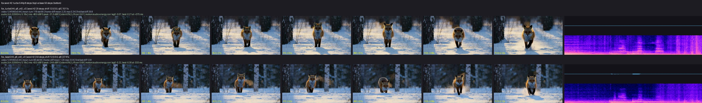
Fox image-to-video, seed 42 (clip,
keyframe, prompt):
the first frame of the 768p fox clip as keyframe through minimax-h3-turbo-544p. Frame 0 reproduces
the keyframe at PSNR 32.3 dB, the fox then looks at the camera and trots to the right with the camera
following, and the quiet track (-26.9 dBFS RMS) carries the paw crunches under the sparse piano the
prompt asks for; 14.8 min for 8 steps and both decodes in a long-running process, 86 GB MLX peak. The
sheet's first tile is the keyframe.
{kind=link}
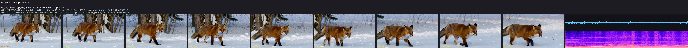
Starship image-to-video, seed 42 (clip,
keyframe,
prompt): the repository's 768x432 spaceship-on-snow
image on the 544p entry's native 960x544 canvas. Frame 0 reproduces the keyframe at PSNR 29.4 dB;
the hull, the two side engine pods, the red antenna and the landing legs stay intact while the
engines light up, a ring of ice dust spreads under the hull, the craft rises straight out of the top
of the frame and the dust settles on the empty plain. The track is a continuous low engine roar
(more than 80% of its energy below 200 Hz in every half second, -10.8 dBFS RMS) that builds with the
liftoff and fades as the craft leaves. 15.5 min for 8 steps and both decodes in a long-running
process (10.8 min in a fresh one).
{kind=link}
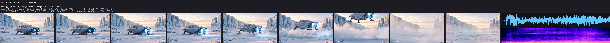
Spaceship takeoff image-to-video, seed 42 (clip,
keyframe, prompt): the
repository's square 512x512 cargo-ship image gives a 544x544 canvas on the 544p entry. The ship
keeps its shape and landing struts, lifts off in one continuous motion with a snow ring beneath it,
leaves through the top of the frame and the blown snow settles on the empty field; the engine
rumble builds from -21 to -14 dBFS RMS and fades with the climb, and the motion/audio-energy
correlation peaks at 0.71. 5.8 min for 8 steps and both decodes. Frame 0 matches the stretched
keyframe at PSNR 26.5 dB (the source carries film grain).
{kind=link}
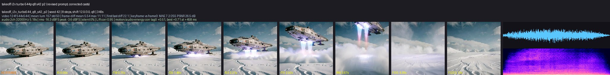
The same keyframe, prompt and seed through minimax-h3-turbo (clip)
lands on a 768x768 canvas: the same continuous liftoff with sharper hull plating, portholes and
struts (frame 0 at PSNR 29.3 dB), a -19 dBFS RMS engine track, 17.3 min for 8 steps and both
decodes, 88 GB process footprint.
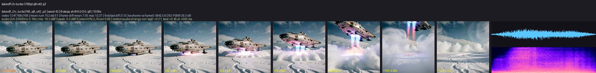
Room walkthrough image-to-video, seed 42 (clip,
keyframe, prompt): a
first-person prompt on a 880x1168 watercolor painting of a living room, which the 544p entry maps to
a portrait 544x736 canvas. The camera walks across the rug toward the leather couch, lowers as it
sits, a hand reaches out and opens the nearest laptop until its screen faces us, and the view turns to
the bay windows, the round table and the trees outside, all in the painting's style. The park track
stays quiet until birdsong takes over in the second half (1 to 8 kHz carrying up to 75% of the energy)
with a lid click on top; the motion/audio-energy correlation peaks at 0.42. Frame 0 matches the
downscaled keyframe at PSNR 24.8 dB; 10.2 min for 8 steps and both decodes, 88 GB footprint. Fast
object manipulation is where the 8-step adapter is weakest: a handled object can settle into a new
orientation over a few frames instead of rotating continuously through them, so name the pivot and
anchor the object as the prompt above does.
{kind=link}
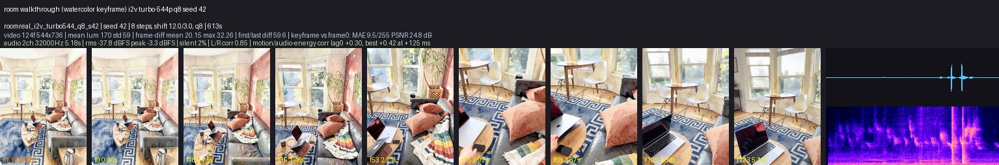
Ocean waves, seed 42 (clip, prompt): waves break over basalt rocks with a large spray mid-clip while sea birds cross the sky; the broadband ocean track (-29.5 dBFS RMS) swells with the break.
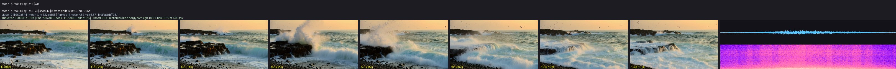
Spoken dialogue, seed 42 (clip,
prompt): one speaker written as
The woman with a clear, warm mid-pitched voice (S1) says: <d>[English] ...</d> in the description,
with the kitchen ambience in the soundscape and no score. The model animates her mouth through the
line and generates the voice: the track is dominated by the 300 Hz to 3 kHz speech band in syllabic
bursts, its voiced pitch sits at a 219 Hz median, and the mouth region's motion follows the audio
envelope at a 0.54 correlation. Dialogue is generated speech, not a voice you supply; voice-timbre
references belong to the unported reference-to-video route.
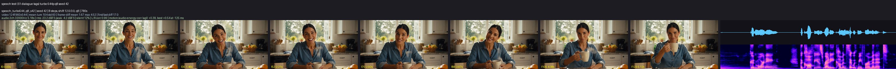
Fox at 768p, seed 42 (clip): the same prompt
through minimax-h3-turbo on its native 1344x768 canvas (8 steps, 34 min). Denser fur and snow
detail than the 544p clips, the same walk-then-look-at-camera staging, and a quiet stereo track with
the paw crunches tracking the motion.
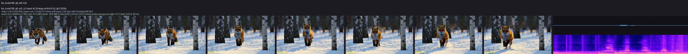
Wan2.2 TI2V-5B on the fox description (clip):
the visual part of the same prompt through the silent Wan route (832x480, 121 frames, 50 steps,
23 min). Included as a reference point for pacing and style, not as a like-for-like quality
comparison: the two models have different canvases, schedules, and training data, and only MiniMax-H3
generates the soundtrack.
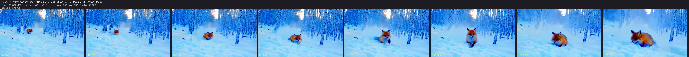
Street guitarist, seed 42 (clip, prompt): a slow dolly-in on a fingerpicking musician; the spectrogram shows the plucked-string harmonics and rhythm of the on-camera guitar (-14 dBFS RMS, stereo correlation 0.88).
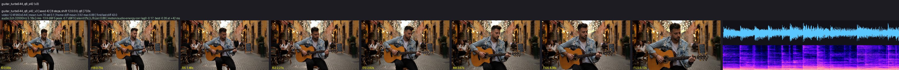
Community character adapter, with and without (prompt;
clips without,
with, seed 42,
with, seed 7, each with its
.metadata.json beside it): the civitai
"Skeletor" adapter (H3_Skeletor_1.4.safetensors, ai-toolkit 0.12.18, rank 8, original-checkpoint
key layout, 416 keys) stacked at scale 1.0 on the 544p Turbo adapter, 640x352, 124 frames, 8
steps. Top: the same prompt and seed 42 through the Turbo adapter alone, which reads the name as a
generic bone skeleton king with a golden horned crown. Middle: seed 42 with the adapter, the
Masters of the Universe character (purple hood and collared cape, blue body, bare skull with red
eyes, ram-skull staff with glowing green eyes), on the same push-in. Bottom: seed 7 with the
adapter, the same character in a different pose and framing. Same-seed runs of this runtime are
byte-identical, so the whole middle-versus-top difference (frame PSNR median 15.7 dB, audio
correlation 0.04) is the adapter; the voice line changes with it. The adapter costs about 1% per
linear layer (rank 8 next to Turbo's rank 128).
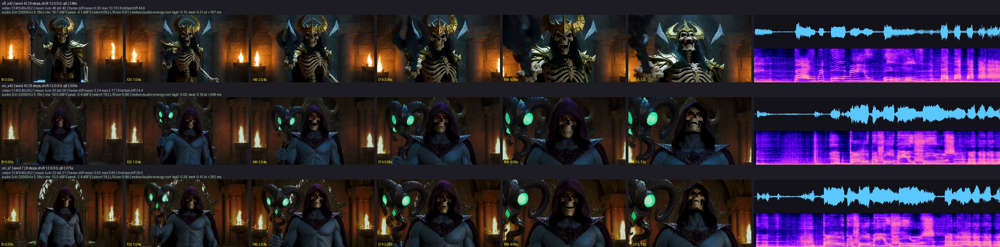
Turbo step counts (8-step adapter at 4 steps,
4-step v1.2 adapter at 4 steps,
4-step v1.2 adapter at 8 steps):
the Skeletor prompt above through the Turbo adapters alone, seed 42, 640x352, 124 frames. Top to
bottom: the 544p 8-step adapter at 8 steps (the with/without reference clip, 248 s), the same
adapter at 4 steps (80 s; same staging, slightly higher contrast, the spoken line and laugh
intact), the 4-step v1.2 768p adapter at 4 steps with --video-shift 6 (133 s; brighter, more
saturated, more armor detail), and that adapter at 8 steps (401 s on a warm machine; close to its
4-step result). Every row speaks the line; the rows differ in look, not in coherence.
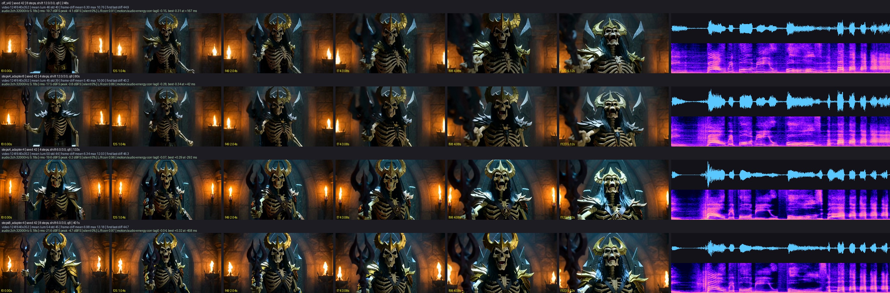